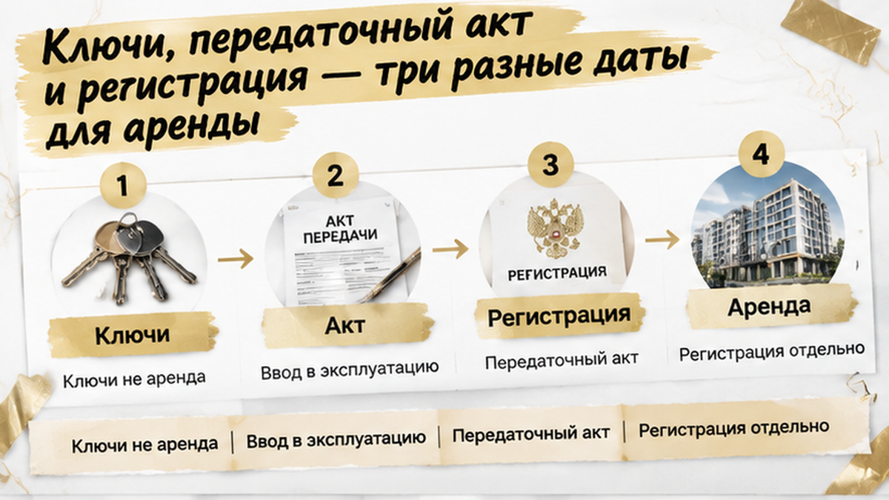

В Тюмени инвестор договорился с 2 будущими жильцами — и за 7 дней до подписания ДДУ потерял обоих: в приложении №3 запретили сдавать квартиру до передачи по акту и регистрации права. До конца брони оставалась 1 неделя. Однокомнатную он выбирал под аренду и уже считал доход от заселения «к ключам». В офисе продаж на почту пришёл полный пакет документов — основной договор вместе с приложениями. Теперь вместо подготовки к покупке пришлось разбираться, может ли он вообще выполнить обещание жильцам.
Я Святослав Шакин, The Риэлтор, Тюмень. В новостройке важно не только сколько стоит квартира, но и что вам разрешат с ней делать после покупки. Разбираю такие условия простым языком в Telegram и MAX — до подписи, а не когда деньги уже ушли.
На первый взгляд расчёт был понятный: получить однокомнатную, заселить людей, начать получать платежи. Рекламный срок подходил под этот план, а найденные арендаторы делали покупку ещё привлекательнее. Квартира пока только забронирована, зато уже есть кому её сдать. Для инвестора это выглядело как удачное начало, а не как повод притормозить.
Договор аренды ещё не подписывали. Была устная договорённость о предполагаемом въезде, но в расчётах будущие платежи уже стояли рядом с рекламной датой. Вот здесь и появилась проблема: доход привязали к сроку, который сам по себе не обещал возможность заселения. Слова «к ключам» звучали достаточно определённо для разговора, но для договора этой определённости не хватало.
Обычно покупатель первым делом смотрит цену, площадь и срок. При проверке квартиры под аренду нужен ещё один вопрос: с какого момента ею можно пользоваться именно так, как задумано? Не просто зайти внутрь, а передать жильцам. Если от ответа зависит весь расчёт покупки, оставлять его на потом нельзя.
В отдельном разборе переноса ключей в тюменской новостройке я показывал, почему срок сдачи дома нельзя принимать за твёрдую дату получения квартиры. Здесь ждать задержки стройки не потребовалось. Несовпадение между планом и документами обнаружилось ещё до сделки.
В третьем приложении стояли два условия: передать квартиру по акту и зарегистрировать право собственности. Не одно из двух, а оба. Получить квартиру и выполнить всё, что требуется для аренды по этому пункту, — разные вещи. Именно этого промежутка в первоначальном расчёте инвестора не было.
Приложение легко принять за второстепенные бумаги: основной договор прочитан, цена совпадает, остальное можно посмотреть позже. Но если ДДУ включает приложение в договорный пакет, его условия нельзя отложить вместе с рекламным буклетом. Здесь рядом с запретом упоминались санкции и расторжение. Это уже не вопрос удобства заселения, а возможный спор после покупки.
При этом фраза о расторжении ещё не означает, что застройщик бесспорно сможет его добиться. Объявить запрет автоматически недействительным тоже нельзя. Нужен весь текст: что именно запрещено, когда действует ограничение и какие последствия предусмотрены. Одной вырванной строки недостаточно ни для спокойного «подписываем», ни для уверенного «это незаконно».
Вопрос застройщику здесь вполне бытовой: «После акта, но до регистрации права сдавать можно? Где это написано?» Ответ нужен письменный и со ссылкой на условие договора. Устное «обычно так делают» не убирает запрет из приложения и не даёт основания обещать людям дату переезда.
До подписи ещё можно остановиться и разобраться. Так было и в истории, где банк изменил ставку перед ДДУ и сделку остановили до внесения денег. А если документы присылают повторно, проверять нужно последнюю версию целиком — почему это важно, разбирал в истории замены договорного пакета. У нашего инвестора деньги по ДДУ и на эскроу пока не вносились, но срок брони продолжал идти.
Инвестор отказался подписывать ДДУ. Не потому, что передумал сдавать квартиру, — он больше не мог подтвердить обещанный срок въезда. Покупать с расчётом «потом как-нибудь договоримся» означало оставить в договоре запрет, а в своей таблице доходности — аренду, которую пока нельзя было обещать.
Срок брони закончился, квартира вернулась в продажу. Двое будущих жильцов ждать не стали и выбрали соседний проект. При этом «бронь сгорела» здесь означает прежде всего потерю закреплённого лота: вопрос возврата платы решается по отдельному договору бронирования. Отказ от ДДУ сам по себе не запускает возврат, но и считать любой такой платёж безусловно потерянным нельзя.
Деньги по ДДУ и на эскроу инвестор не вносил. Это важная граница: он остановился до сделки, а не после оплаты, когда пришлось бы разбираться уже с подписанными обязательствами. Квартиру не купил, жильцов упустил, зато не взял на себя договор, который расходился с его планом заработка.
Если в ДДУ есть запрет на аренду до ключей и регистрации права, вы бы подписали договор, рассчитывая договориться неофициально, или отказались бы от квартиры?
Объявлять спорный пункт недействительным прямо у ноутбука тоже было бы слишком смело. Упоминание санкций и расторжения ещё не означает, что застройщик бесспорно сможет их применить. Но вычеркнуть условие из головы — не значит убрать его из документов: оценивать нужно весь пакет, формулировки и обстоятельства возможного спора.
Обычный покупатель открывает договор на цене и сроке передачи: квартира та, сумма та — можно двигаться дальше. При покупке под аренду этого мало. Я смотрю ещё и на то, не расходится ли договор с тем, ради чего человек покупает квартиру. Здесь весь расчёт упёрся в условие из приложения, а не в стоимость однушки.
| Что сверить | Где смотреть | Что выяснить до подписи |
|---|---|---|
| Полноту пакета | ДДУ, перечень приложений, полученные файлы | Все ли приложения прислали и совпадают ли версии? Документ по ссылке в договоре нельзя оставлять непрочитанным. |
| Плату за бронь | Договор бронирования и квитанцию | За что внесены деньги: аванс, обеспечение или услуга? Когда их возвращают и на каком основании удерживают? |
| Начало аренды | Условия пользования квартирой и приложения | Достаточно передачи по акту или нужно дождаться регистрации собственности? |
| Последствия нарушения | Разделы о запретах, санкциях и расторжении | Какое действие считается нарушением и какой порядок предусмотрен? Одной пугающей строки для вывода недостаточно. |
| Срок передачи | ДДУ в сравнении с рекламой | Какая дата закреплена в договоре, а какая осталась обещанием в рекламе? |
| Дополнительные правила | Документы о доступе и проживании, на которые ссылается ДДУ | Есть ли условия, которые затронут будущего арендатора? |
Спорный вопрос застройщику лучше задать письменно и без обходных формулировок: «Можно сдавать после передаточного акта, но до регистрации права? На какой пункт вы опираетесь?» Такой ответ помогает увидеть расхождение, но сам по себе не переписывает договор. Если в письме разрешают, а в приложении запрещают, противоречие нужно разобрать до подписи, а не оставить на день заселения.
Покупаете новостройку под аренду и не понимаете, как условие в приложении повлияет на ваш план? Напишите в Telegram или MAX. Подключусь до брони или подписи: разберём, что обещают на словах и что вы действительно принимаете по документам.

«Ключи получите — можно запускать жильцов». Для покупателя это звучит как понятный план: квартира готова, дверь открывается, чего ждать? Но ключами дверь откроешь, а пункт договора не отменишь. Если аренду привязали ещё и к регистрации собственности, одного доступа в квартиру для выполнения этого условия мало.
Ввод дома в эксплуатацию означает, что дом разрешено использовать. Передаточный акт — что квартиру передали покупателю. Регистрация права — отдельный этап оформления собственности. Эти события не обязаны случиться в один день, и рекламное «сдача дома» не собирает их в одну удобную дату.
При этом не стоит превращать условие одного приложения в общий запрет для всех новостроек. Здесь вопрос возник из конкретного договорного пакета. Что именно запрещено, до какого момента и какие последствия предусмотрены — это читают вместе, а не выхватывают одну страшную строчку про расторжение. Написанная санкция и бесспорное право её применить — тоже не одно и то же.
Для инвестора разница вполне житейская. Жильцу нужна дата, к которой можно перевезти вещи, а не объяснение, почему документы ещё оформляются. Если подтверждённой даты нет, её нельзя заменить уверенностью менеджера или собственным желанием поскорее начать сдавать. Иначе ожидание, которое пока существует только в расчёте доходности, становится обещанием другому человеку.
На бумаге аренда считается приятно: ежемесячный платёж умножили на месяцы, вычли расходы. Самое неудобное место — первый месяц. Он начинается не тогда, когда в рекламе стоит красивая дата, а когда квартиру действительно можно передать жильцу с учётом условий договора. Пока эта точка не ясна, доход ещё нельзя считать обеспеченным.
Бронь поджимает совсем с другой стороны. Квартиру хочется удержать, решение нужно быстро, а полный пакет ещё требует чтения. Но бронь не заменяет ДДУ и не гарантирует подходящие условия покупки. Плата за неё тоже живёт по отдельному документу: отказ от квартиры сам по себе не означает ни обязательного возврата, ни безусловной потери денег.
Обычный покупатель в этот момент спрашивает: «Успеваем подписать?» Профессиональный подход — сначала понять, что именно подписываем и подходит ли это под задачу. Для квартиры под аренду ограничение на использование — не мелкий шрифт где-то после цены. Оно напрямую касается того, ради чего человек вообще покупает этот объект.
Эскроу здесь не ответ на все вопросы. Этот счёт относится к расчётам по сделке, а не подтверждает будущий доход от жильцов. Можно разобраться, куда пойдут деньги за квартиру, и всё равно ошибиться с началом аренды. Поэтому проверка оплаты и проверка обещанного въезда — две разные задачи.
Остановиться до подписи — неприятное решение, особенно когда планы уже сложились. Но здесь инвестор сохранил главное: не вошёл в ДДУ и не внёс деньги под обещание, которое не мог подтвердить. Это не отменяет потерь. Зато оставляет возможность выбирать следующую квартиру уже под реальные сроки, а не под надежду договориться потом.